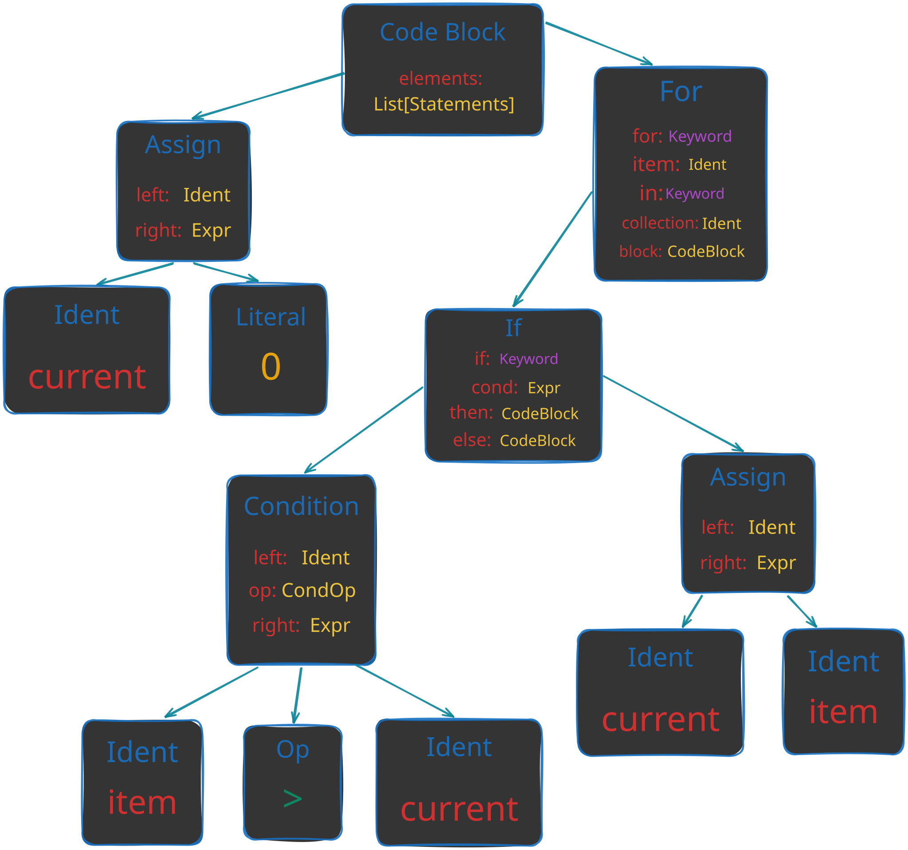
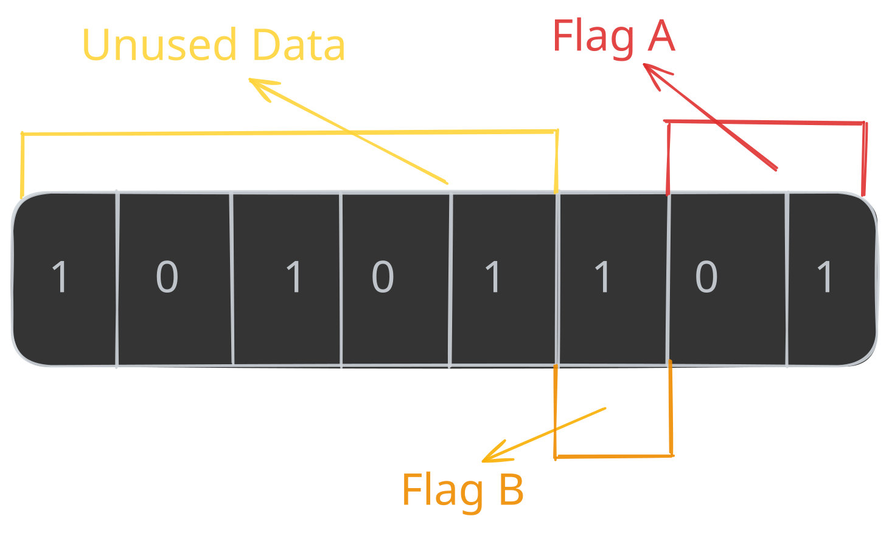
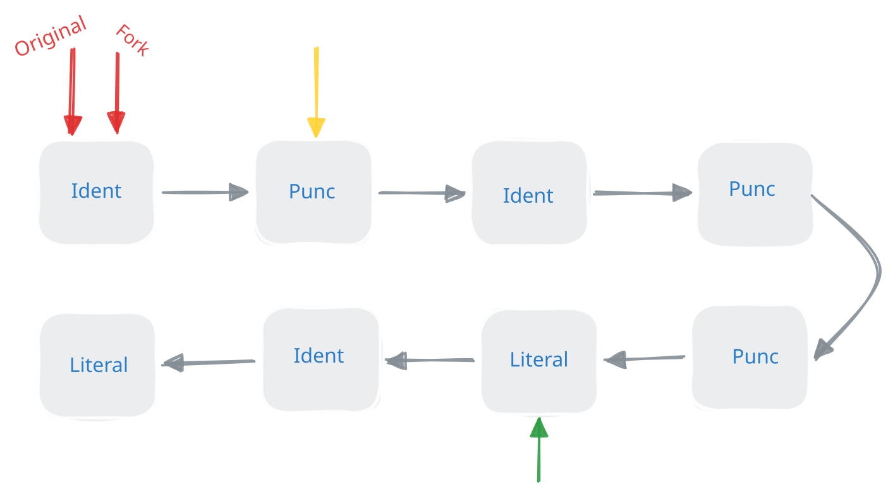

Writing the Bitflags Macro
As you may recall from the previous chapter, we used a proc-macro that was called bitfields. In this chapter, we are going to learn about Rusts proceadural macros, and even implement this macro ourselves.
Another great resource for this subject is the great video Comprehending Proc Macros by Logan Smith
If you are familer with procedural macros, syn and quote, and want to go straight to the macro implementation, click here
A Little Introduction to Proceadural Macros
Macros are not a new idea in programming languages, and most of them have macros in some shape or form. But what even is a macro?
If you ask wikipidia, we get the following definition.
Macro
A macro is a rule or pattern that specifies how a certain input should be mapped to a replacement output.
When I read this definition, the first thing that comes to mind, is that it really sounds like a function. After all, a function maps the input argument, to the output arguments, Which is exactly what a macro does. And that is exactly right, in Rust, macros (specifically proceadural macros), are indeed a specific type of functions, but lets not get ahead of ourselves.
The key differences between macros and regular functions is that macros replace the inputs and the outputs, and that is not always true with functions. Secondly, macros operate on our source code instead of variables in our program.
Rust takes this definition very literally, and the definition for a proc-macro function looks like this:
#[proc_macro]
pub fn custom_proc_macro(input: TokenStream) -> TokenStream {
eprintln!("{:?}", input);
input
}As you can see in this function, the input is Rusts TokenStream which is literally our source code, and the output is also a TokenStream which means it expects us to return also source code which could be the same (Like the example above), but most of the time it is not.
But what is this TokenStream, why not to just use strings of the source code?
Well, the main reason we are even discussing this, is that we want to manipulate the initial code in some way. Tokenizing the source code allows us to manipulate the code at a higher level which is easier to reason about. This TokenStream is the most basic tokenization unit that we are going to work with, and it contains a sequence of TokenTree nodes that represent the source code.
/// A single token or a delimited sequence of token trees (e.g., `[1, (), ..]`).
#[stable(feature = "proc_macro_lib2", since = "1.29.0")]
#[derive(Clone)]
pub enum TokenTree {
/// A token stream surrounded by bracket delimiters.
#[stable(feature = "proc_macro_lib2", since = "1.29.0")]
Group(#[stable(feature = "proc_macro_lib2", since = "1.29.0")] Group),
/// An identifier.
#[stable(feature = "proc_macro_lib2", since = "1.29.0")]
Ident(#[stable(feature = "proc_macro_lib2", since = "1.29.0")] Ident),
/// A single punctuation character (`+`, `,`, `$`, etc.).
#[stable(feature = "proc_macro_lib2", since = "1.29.0")]
Punct(#[stable(feature = "proc_macro_lib2", since = "1.29.0")] Punct),
/// A literal character (`'a'`), string (`"hello"`), number (`2.3`), etc.
#[stable(feature = "proc_macro_lib2", since = "1.29.0")]
Literal(#[stable(feature = "proc_macro_lib2", since = "1.29.0")] Literal),
}To see this more visibly, we can print our TokenStream, because it implement the Debug trait. Which for a simple struct would look like this:
TokenStream [
Ident {
ident: "struct",
span: #0 bytes(43..49),
},
Ident {
ident: "Example",
span: #0 bytes(50..57),
},
Group {
delimiter: Brace,
stream: TokenStream [
Ident {
ident: "a",
span: #0 bytes(64..65),
},
Punct {
ch: ':',
spacing: Alone,
span: #0 bytes(65..66),
},
Ident {
ident: "i32",
span: #0 bytes(67..70),
},
Punct {
ch: ',',
spacing: Alone,
span: #0 bytes(70..71),
},
],
span: #0 bytes(58..73),
},
]
Can you understand what is the name of the struct and its fields?
How Macros are Executed
As you may have noticed, macros does not behave exactly like regular functions. Another difference that they have is that they are evaluated at compile time.
This thinking can also be used on regular functions, but not from our point of view, but from the compilers. For the compiler, regular functions are also a mapping, from some target language (in our case, Rust) to some other target language (in most cases, ASM1).
For example, this function:
#[unsafe(no_mangle)]
pub fn square(num: i32) -> i32 {
num * num
}would map to the following ASM code:
Tip
Look it yourself at compiler explorer
square:
mov eax, edi
imul eax, edi
ret
From this point of view, macros are not so different, but instead of a target language, they are mapped to the same language. So this macro:
macro_rules! square {
($num:expr) => {
$num * $num
};
}
fn foo() -> u32 {
let x: u32 = 42;
square!(x)
}Would map to this literal Rust code:
fn foo_expanded() -> u32 {
let x: u32 = 42;
x * x
}The fact that macros operate on our source code, means that we can abstract certain logics, that regular functions cannot. For example, take a look at this macro:
macro_rules! unwrap_or_break {
($e:expr) => {
match $e {
Some(v) => v,
None => break,
}
};
}
fn main() {
let data: Vec<Option<i32>> = vec![Some(1), Some(2), None, Some(4)];
for d: Option<i32> in data {
let val: i32 = unwrap_or_break!(d); // breaks the loop on None
println!("{}", val);
}
println!("done");
}It works, because it injects the break expression into the code at the call site, which is something that a function just can’t do.
fn unwrap_or_break<T>(e: Option<T>) -> T {
match e {
Some(v: T) => v,
None => break, // ERROR: `break` outside of a loop
}
}At this time, I hope you understand the great power of macros, and the great code generation capabilities that they enable. But, you might think rightfully think that in the examples above, we didn’t have the option to insert ‘coding’ logic into the macro expansion. This is where procedural macros come in.
Macro Types
Just before we dive into procedural macros, lets cover up the type of macro that we already used in the examples above.
All the syntax information about how macros are structured are taken directly from the Official Rust Reference.
Declarative Macros
Declarative macros are the simplest type of macro, and they are the ones that we used in the examples above. They are mainly used to generate mainly simple syntax extensions, which are commonly called “macros by example”.
Each macro is defined by a set of rules that specify how the macro should expand. Each rule looks a bit like a function signature that can get certain Metavariables. These Metavariables are placeholders for certain Rust syntax that are replaced with actual values when the macro is expanded.
Lets analyze the syntax of a declarative macro rule from the earlier examples.
/// Macros are defined using the `macro_rules!` macro,
/// followed by the name of the macro.
macro_rules! unwrap_or_break {
// Each rule is defined with the "() => {}" syntax,
// in the parentheses we provide the pattern to match,
// which uses `Metavariables` to capture parts of the input.
($e:expr) => {
// Then, we can write 'regular' Rust code inside the macro body,
// which uses the metavariables to generate the expanded code.
match $e {
Some(v) => v,
None => break,
}
};
}We will go a bit deeper then necessary on the common types of metavariables that are available. This is because later in this chapter we are going to talk about the syn library, which will parse Rusts syntax into similar structures.
Each metavariable starts with a $ followed by the name of the metavariable which is used to refer to it. Then it is followed by a colon and the type of the metavariable.
The common types of metavariables are:
- Idents ($i:ident) => These can be function names, variable names, type names, etc. They also include keywords like
fn,let,struct, etc. - Expressions ($e:expr) => Expressions are things that are evaluated to a value, like
1 + 2orfoo.bar(). - Items ($i:item) => Items are the components of a module, for example the entire definition of a function or a struct.
- Statements ($s:stmt) => Statements are the individual lines of code that make up a function or block. For example
let x = 42;is a statement. - Blocks ($b:block) => Blocks are groups of statements that are executed on the same scope. For example
{ let y = 33; let x = 7 + y; x }is a block.
For a full list of available metavariable types, see the reference
Procedural Macros
Now for the real deal. Proceadural macros gives us the ability to go beyond simple syntax extensions, and allow us to write custom Rust code that will run on compile time on the macro input to consume and produce new Rust syntax (Depending on the macro type, the returned syntax will replace the input syntax, or will be added to it).
Because procedural macros are another piece of code that will run at compile time, they cannot be defined in the same crate as the code that uses them. This is because the Rust compiler must initially compile the code of the macro so it will be able to run it during the compilation process. In addition, each proc macro crate, must add the following configuration to their Cargo.toml file, which will tell Cargo that this is a proc macro crate.
[lib]
proc-macro = true
As all function, these macro functions can also fail, although these functions are allowed to panic. They are encouraged to use the compile_error! macro to return a compile time error instead, which is the compiler form of panic!
To gain the Tokenstream type and the attributes that will be used on the macro functions, we need will use the proc_macro crate which is automatically linked to our crate if it is a proc macro crate.
function_like!()
function like macros are very similar to declarative macros. They are invoked like a regular function and take a TokenStream as input and return a TokenStream as output.
This type of macro can be called anywhere in our code, even in global scope and is defined using the following syntax:
#[proc_macro]
pub fn foo(_item: TokenStream) -> TokenStream {
"fn bar() -> u32 { 42 }".parse().unwrap()
}Then it can be called like a regular function, which will create a function that is called bar which could be used in our code.
use crate::foo;
foo!();
fn main() {
println!("{}", bar());
}This type of macro replaces the macro invocation with the generated code, so the macro invocation is effectively replaced with the generated code.
#[derive(CustomDerive)]
Derive macros are used on On Rust items to generate code automatically. They are invoked using the #[derive] attribute and take the item they are applied to as input. Most of the time, derive macros are used to implement traits such as Debug, Clone, PartialEq, etc.
Derives may also include helper attributes, which are used to customize the generated code.
This type of macro can be called only from structs, enums or unions.
#[proc_macro_derive(WithHelperAttr, attributes(helper))]
pub fn derive_with_helper_attr(_item: TokenStream) -> TokenStream {
TokenStream::new()
}And is used on a structure like this:
#[derive(WithHelperAttr)]
struct Foo {
#[helper]
bar: (),
}This type of macro does not replace the macro invocation or the input item with the generated code, and the generated TokenStream is appended to the input TokenStream.
#[attribute(macros)]
Attributes are used to annotate items with. They are placed before the item they are applied to and are used to customize the behavior of the item.
Attributes may also include input variables, which can be used to pass ‘configuration’ to the macro.
#[proc_macro_attribute]
pub fn return_as_is(_attr: TokenStream, item: TokenStream) -> TokenStream {
item
}And is used on a structure like this:
#[return_as_is]
struct Bar {
foo: (),
}
#[return_as_is]
fn bar() {}This type of macro replaces the macro invocation and the input item with the generated code.
Introduction to Syn and Quote
Remembering our goal to write the bitfield macro from earlier chapter, you can already guess that we want to write an attribute macro. But, parsing the TokenStream we saw above is really hard, because it will require us to understand Rusts syntax tree, which can be quite complex.
Luckyly for us, the syn crate, written by David Tolnay provides a way to parse Rust syntax tree into a structured AST (Abstract Syntax Tree), which makes it easier to work with Rust source code.
What are Abstract Syntax Trees
As the name suggests, this a tree like structure, that represents the syntax of a certain programming language (in our case, Rust).
Before diving right into the implementation of syn on Rust syntax, let’s first understand what an AST is.
We will look at a really simple program, that is writing in Python.
current = 0
for item in items:
if item > current:
current = item
A simplified syntax tree for a simple program like this might look like this:

As you can see, in a tree like this we can have types that help us represent the syntax in our language. For example the Assign statement which contains a left and right side. Or the For loop which contains item that is being iterated over, the collection name, and the body of the loop. Then, when we want to operate on the syntax it self, for example, create the same if statement, but change the name of the item. We can simply copy the type, and change the item ident to a new one.
As you may have gussed, syn does the exact same thing we did with our small program, but with all the complexity of a real language. So lets see what types does it offer.
There are a lot of types on the syn crate, and we will only cover some of them. Once you get the hang of it, all the other will be easy to understand.
The top level type for the AST is syn::File, which represents a complete Rust source file.
ast_struct! {
/// A complete file of Rust source code.
///
/// Typically `File` objects are created with [`parse_file`].
///
/// [`parse_file`]: crate::parse_file
///
/// # Example
///
/// Parse a Rust source file into a `syn::File` and print out a debug
/// representation of the syntax tree.
///
/// ```
/// use std::env;
/// use std::fs;
/// use std::process;
///
/// fn main() {
/// # }
/// #
/// # fn fake_main() {
/// let mut args = env::args();
/// let _ = args.next(); // executable name
///
/// let filename = match (args.next(), args.next()) {
/// (Some(filename), None) => filename,
/// _ => {
/// eprintln!("Usage: dump-syntax path/to/filename.rs");
/// process::exit(1);
/// }
/// };
///
/// let src = fs::read_to_string(&filename).expect("unable to read file");
/// let syntax = syn::parse_file(&src).expect("unable to parse file");
///
/// // Debug impl is available if Syn is built with "extra-traits" feature.
/// println!("{:#?}", syntax);
/// }
/// ```
///
/// Running with its own source code as input, this program prints output
/// that begins with:
///
/// ```text
/// File {
/// shebang: None,
/// attrs: [],
/// items: [
/// Use(
/// ItemUse {
/// attrs: [],
/// vis: Inherited,
/// use_token: Use,
/// leading_colon: None,
/// tree: Path(
/// UsePath {
/// ident: Ident(
/// std,
/// ),
/// colon2_token: Colon2,
/// tree: Name(
/// UseName {
/// ident: Ident(
/// env,
/// ),
/// },
/// ),
/// },
/// ),
/// semi_token: Semi,
/// },
/// ),
/// ...
/// ```
#[cfg_attr(docsrs, doc(cfg(feature = "full")))]
pub struct File {
pub shebang: Option<String>,
pub attrs: Vec<Attribute>,
pub items: Vec<Item>,
}
} ast_struct!Ok, we can see that syn::File is made out of a list of syn::Attribute and syn::Item. But this doesn’t tell us much, so let’s also explore them.
ast_struct! {
/// An attribute, like `#[repr(transparent)]`.
///
/// <br>
///
/// # Syntax
///
/// Rust has six types of attributes.
///
/// - Outer attributes like `#[repr(transparent)]`. These appear outside or
/// in front of the item they describe.
///
/// - Inner attributes like `#![feature(proc_macro)]`. These appear inside
/// of the item they describe, usually a module.
///
/// - Outer one-line doc comments like `/// Example`.
///
/// - Inner one-line doc comments like `//! Please file an issue`.
///
/// - Outer documentation blocks `/** Example */`.
///
/// - Inner documentation blocks `/*! Please file an issue */`.
///
/// The `style` field of type `AttrStyle` distinguishes whether an attribute
/// is outer or inner.
///
/// Every attribute has a `path` that indicates the intended interpretation
/// of the rest of the attribute's contents. The path and the optional
/// additional contents are represented together in the `meta` field of the
/// attribute in three possible varieties:
///
/// - Meta::Path — attributes whose information content conveys just a
/// path, for example the `#[test]` attribute.
///
/// - Meta::List — attributes that carry arbitrary tokens after the
/// path, surrounded by a delimiter (parenthesis, bracket, or brace). For
/// example `#[derive(Copy)]` or `#[precondition(x < 5)]`.
///
/// - Meta::NameValue — attributes with an `=` sign after the path,
/// followed by a Rust expression. For example `#[path =
/// "sys/windows.rs"]`.
///
/// All doc comments are represented in the NameValue style with a path of
/// "doc", as this is how they are processed by the compiler and by
/// `macro_rules!` macros.
///
/// ```text
/// #[derive(Copy, Clone)]
/// ~~~~~~Path
/// ^^^^^^^^^^^^^^^^^^^Meta::List
///
/// #[path = "sys/windows.rs"]
/// ~~~~Path
/// ^^^^^^^^^^^^^^^^^^^^^^^Meta::NameValue
///
/// #[test]
/// ^^^^Meta::Path
/// ```
///
/// <br>
///
/// # Parsing from tokens to Attribute
///
/// This type does not implement the [`Parse`] trait and thus cannot be
/// parsed directly by [`ParseStream::parse`]. Instead use
/// [`ParseStream::call`] with one of the two parser functions
/// [`Attribute::parse_outer`] or [`Attribute::parse_inner`] depending on
/// which you intend to parse.
///
/// [`Parse`]: crate::parse::Parse
/// [`ParseStream::parse`]: crate::parse::ParseBuffer::parse
/// [`ParseStream::call`]: crate::parse::ParseBuffer::call
///
/// ```
/// use syn::{Attribute, Ident, Result, Token};
/// use syn::parse::{Parse, ParseStream};
///
/// // Parses a unit struct with attributes.
/// //
/// // #[path = "s.tmpl"]
/// // struct S;
/// struct UnitStruct {
/// attrs: Vec<Attribute>,
/// struct_token: Token![struct],
/// name: Ident,
/// semi_token: Token![;],
/// }
///
/// impl Parse for UnitStruct {
/// fn parse(input: ParseStream) -> Result<Self> {
/// Ok(UnitStruct {
/// attrs: input.call(Attribute::parse_outer)?,
/// struct_token: input.parse()?,
/// name: input.parse()?,
/// semi_token: input.parse()?,
/// })
/// }
/// }
/// ```
///
/// <p><br></p>
///
/// # Parsing from Attribute to structured arguments
///
/// The grammar of attributes in Rust is very flexible, which makes the
/// syntax tree not that useful on its own. In particular, arguments of the
/// `Meta::List` variety of attribute are held in an arbitrary `tokens:
/// TokenStream`. Macros are expected to check the `path` of the attribute,
/// decide whether they recognize it, and then parse the remaining tokens
/// according to whatever grammar they wish to require for that kind of
/// attribute. Use [`parse_args()`] to parse those tokens into the expected
/// data structure.
///
/// [`parse_args()`]: Attribute::parse_args
///
/// <p><br></p>
///
/// # Doc comments
///
/// The compiler transforms doc comments, such as `/// comment` and `/*!
/// comment */`, into attributes before macros are expanded. Each comment is
/// expanded into an attribute of the form `#[doc = r"comment"]`.
///
/// As an example, the following `mod` items are expanded identically:
///
/// ```
/// # use syn::{ItemMod, parse_quote};
/// let doc: ItemMod = parse_quote! {
/// /// Single line doc comments
/// /// We write so many!
/// /**
/// * Multi-line comments...
/// * May span many lines
/// */
/// mod example {
/// //! Of course, they can be inner too
/// /*! And fit in a single line */
/// }
/// };
/// let attr: ItemMod = parse_quote! {
/// #[doc = r" Single line doc comments"]
/// #[doc = r" We write so many!"]
/// #[doc = r"
/// * Multi-line comments...
/// * May span many lines
/// "]
/// mod example {
/// #![doc = r" Of course, they can be inner too"]
/// #![doc = r" And fit in a single line "]
/// }
/// };
/// assert_eq!(doc, attr);
/// ```
#[cfg_attr(docsrs, doc(cfg(any(feature = "full", feature = "derive"))))]
pub struct Attribute {
pub pound_token: Token![#],
pub style: AttrStyle,
pub bracket_token: token::Bracket,
pub meta: Meta,
}
} ast_struct!So we can see an attribute, like #[derive(Debug)], is represented by syn::Attribute. Currently, we will not dive deeper into Attribute but we will cover more of it, when we will use it in our macro implementation.
Now let’s see syn::Item.
ast_enum_of_structs! {
/// Things that can appear directly inside of a module or scope.
///
/// # Syntax tree enum
///
/// This type is a [syntax tree enum].
///
/// [syntax tree enum]: crate::expr::Expr#syntax-tree-enums
#[cfg_attr(docsrs, doc(cfg(feature = "full")))]
#[non_exhaustive]
pub enum Item {
/// A constant item: `const MAX: u16 = 65535`.
Const(ItemConst),
/// An enum definition: `enum Foo<A, B> { A(A), B(B) }`.
Enum(ItemEnum),
/// An `extern crate` item: `extern crate serde`.
ExternCrate(ItemExternCrate),
/// A free-standing function: `fn process(n: usize) -> Result<()> { ...
/// }`.
Fn(ItemFn),
/// A block of foreign items: `extern "C" { ... }`.
ForeignMod(ItemForeignMod),
/// An impl block providing trait or associated items: `impl<A> Trait
/// for Data<A> { ... }`.
Impl(ItemImpl),
/// A macro invocation, which includes `macro_rules!` definitions.
Macro(ItemMacro),
/// A module or module declaration: `mod m` or `mod m { ... }`.
Mod(ItemMod),
/// A static item: `static BIKE: Shed = Shed(42)`.
Static(ItemStatic),
/// A struct definition: `struct Foo<A> { x: A }`.
Struct(ItemStruct),
/// A trait definition: `pub trait Iterator { ... }`.
Trait(ItemTrait),
/// A trait alias: `pub trait SharableIterator = Iterator + Sync`.
TraitAlias(ItemTraitAlias),
/// A type alias: `type Result<T> = core::result::Result<T, MyError>`.
Type(ItemType),
/// A union definition: `union Foo<A, B> { x: A, y: B }`.
Union(ItemUnion),
/// A use declaration: `use alloc::collections::HashMap`.
Use(ItemUse),
/// Tokens forming an item not interpreted by Syn.
Verbatim(TokenStream),
// For testing exhaustiveness in downstream code, use the following idiom:
//
// match item {
// #![cfg_attr(test, deny(non_exhaustive_omitted_patterns))]
//
// Item::Const(item) => {...}
// Item::Enum(item) => {...}
// ...
// Item::Verbatim(item) => {...}
//
// _ => { /* some sane fallback */ }
// }
//
// This way we fail your tests but don't break your library when adding
// a variant. You will be notified by a test failure when a variant is
// added, so that you can add code to handle it, but your library will
// continue to compile and work for downstream users in the interim.
}
} ast_enum_of_structs!As you can see, we have a lot of items, and I hope that you can start and recognize some of them, as an example, let’s cover ItemConst.
ast_struct! {
/// A constant item: `const MAX: u16 = 65535`.
#[cfg_attr(docsrs, doc(cfg(feature = "full")))]
pub struct ItemConst {
pub attrs: Vec<Attribute>,
pub vis: Visibility,
pub const_token: Token![const],
pub ident: Ident,
pub generics: Generics,
pub colon_token: Token![:],
pub ty: Box<Type>,
pub eq_token: Token![=],
pub expr: Box<Expr>,
pub semi_token: Token![;],
}
} ast_struct!If you have noticed closely, the order of the fields in the struct definition is the same as the order in the source code. This makes it really easy to map the AST back to the source code.
Also, as a side note, keywords like const, struct and punctuation like : and = does have types, but syn also provides a Token! macro that maps the literal token to its corresponding type.
The last type that we are going to cover is syn::Expr, which represents an expression from the source code. Because most of Rusts syntax is represented as expressions, syn::Expr is a very large type.
ast_enum_of_structs! {
/// A Rust expression.
///
/// *This type is available only if Syn is built with the `"derive"` or `"full"`
/// feature, but most of the variants are not available unless "full" is enabled.*
///
/// # Syntax tree enums
///
/// This type is a syntax tree enum. In Syn this and other syntax tree enums
/// are designed to be traversed using the following rebinding idiom.
///
/// ```
/// # use syn::Expr;
/// #
/// # fn example(expr: Expr) {
/// # const IGNORE: &str = stringify! {
/// let expr: Expr = /* ... */;
/// # };
/// match expr {
/// Expr::MethodCall(expr) => {
/// /* ... */
/// }
/// Expr::Cast(expr) => {
/// /* ... */
/// }
/// Expr::If(expr) => {
/// /* ... */
/// }
///
/// /* ... */
/// # _ => {}
/// # }
/// # }
/// ```
///
/// We begin with a variable `expr` of type `Expr` that has no fields
/// (because it is an enum), and by matching on it and rebinding a variable
/// with the same name `expr` we effectively imbue our variable with all of
/// the data fields provided by the variant that it turned out to be. So for
/// example above if we ended up in the `MethodCall` case then we get to use
/// `expr.receiver`, `expr.args` etc; if we ended up in the `If` case we get
/// to use `expr.cond`, `expr.then_branch`, `expr.else_branch`.
///
/// This approach avoids repeating the variant names twice on every line.
///
/// ```
/// # use syn::{Expr, ExprMethodCall};
/// #
/// # fn example(expr: Expr) {
/// // Repetitive; recommend not doing this.
/// match expr {
/// Expr::MethodCall(ExprMethodCall { method, args, .. }) => {
/// # }
/// # _ => {}
/// # }
/// # }
/// ```
///
/// In general, the name to which a syntax tree enum variant is bound should
/// be a suitable name for the complete syntax tree enum type.
///
/// ```
/// # use syn::{Expr, ExprField};
/// #
/// # fn example(discriminant: ExprField) {
/// // Binding is called `base` which is the name I would use if I were
/// // assigning `*discriminant.base` without an `if let`.
/// if let Expr::Tuple(base) = *discriminant.base {
/// # }
/// # }
/// ```
///
/// A sign that you may not be choosing the right variable names is if you
/// see names getting repeated in your code, like accessing
/// `receiver.receiver` or `pat.pat` or `cond.cond`.
#[cfg_attr(docsrs, doc(cfg(any(feature = "full", feature = "derive"))))]
#[non_exhaustive]
pub enum Expr {
/// A slice literal expression: `[a, b, c, d]`.
Array(ExprArray),
/// An assignment expression: `a = compute()`.
Assign(ExprAssign),
/// An async block: `async { ... }`.
Async(ExprAsync),
/// An await expression: `fut.await`.
Await(ExprAwait),
/// A binary operation: `a + b`, `a += b`.
Binary(ExprBinary),
/// A blocked scope: `{ ... }`.
Block(ExprBlock),
/// A `break`, with an optional label to break and an optional
/// expression.
Break(ExprBreak),
/// A function call expression: `invoke(a, b)`.
Call(ExprCall),
/// A cast expression: `foo as f64`.
Cast(ExprCast),
/// A closure expression: `|a, b| a + b`.
Closure(ExprClosure),
/// A const block: `const { ... }`.
Const(ExprConst),
/// A `continue`, with an optional label.
Continue(ExprContinue),
/// Access of a named struct field (`obj.k`) or unnamed tuple struct
/// field (`obj.0`).
Field(ExprField),
/// A for loop: `for pat in expr { ... }`.
ForLoop(ExprForLoop),
/// An expression contained within invisible delimiters.
///
/// This variant is important for faithfully representing the precedence
/// of expressions and is related to `None`-delimited spans in a
/// `TokenStream`.
Group(ExprGroup),
/// An `if` expression with an optional `else` block: `if expr { ... }
/// else { ... }`.
///
/// The `else` branch expression may only be an `If` or `Block`
/// expression, not any of the other types of expression.
If(ExprIf),
/// A square bracketed indexing expression: `vector[2]`.
Index(ExprIndex),
/// The inferred value of a const generic argument, denoted `_`.
Infer(ExprInfer),
/// A `let` guard: `let Some(x) = opt`.
Let(ExprLet),
/// A literal in place of an expression: `1`, `"foo"`.
Lit(ExprLit),
/// Conditionless loop: `loop { ... }`.
Loop(ExprLoop),
/// A macro invocation expression: `format!("{}", q)`.
Macro(ExprMacro),
/// A `match` expression: `match n { Some(n) => {}, None => {} }`.
Match(ExprMatch),
/// A method call expression: `x.foo::<T>(a, b)`.
MethodCall(ExprMethodCall),
/// A parenthesized expression: `(a + b)`.
Paren(ExprParen),
/// A path like `core::mem::replace` possibly containing generic
/// parameters and a qualified self-type.
///
/// A plain identifier like `x` is a path of length 1.
Path(ExprPath),
/// A range expression: `1..2`, `1..`, `..2`, `1..=2`, `..=2`.
Range(ExprRange),
/// Address-of operation: `&raw const place` or `&raw mut place`.
RawAddr(ExprRawAddr),
/// A referencing operation: `&a` or `&mut a`.
Reference(ExprReference),
/// An array literal constructed from one repeated element: `[0u8; N]`.
Repeat(ExprRepeat),
/// A `return`, with an optional value to be returned.
Return(ExprReturn),
/// A struct literal expression: `Point { x: 1, y: 1 }`.
///
/// The `rest` provides the value of the remaining fields as in `S { a:
/// 1, b: 1, ..rest }`.
Struct(ExprStruct),
/// A try-expression: `expr?`.
Try(ExprTry),
/// A try block: `try { ... }`.
TryBlock(ExprTryBlock),
/// A tuple expression: `(a, b, c, d)`.
Tuple(ExprTuple),
/// A unary operation: `!x`, `*x`.
Unary(ExprUnary),
/// An unsafe block: `unsafe { ... }`.
Unsafe(ExprUnsafe),
/// Tokens in expression position not interpreted by Syn.
Verbatim(TokenStream),
/// A while loop: `while expr { ... }`.
While(ExprWhile),
/// A yield expression: `yield expr`.
Yield(ExprYield),
// For testing exhaustiveness in downstream code, use the following idiom:
//
// match expr {
// #![cfg_attr(test, deny(non_exhaustive_omitted_patterns))]
//
// Expr::Array(expr) => {...}
// Expr::Assign(expr) => {...}
// ...
// Expr::Yield(expr) => {...}
//
// _ => { /* some sane fallback */ }
// }
//
// This way we fail your tests but don't break your library when adding
// a variant. You will be notified by a test failure when a variant is
// added, so that you can add code to handle it, but your library will
// continue to compile and work for downstream users in the interim.
}
} ast_enum_of_structs!These types are very powerful, and help us express the language is a structured way. As a quick example, let’s see how syn::ItemStruct is represented in the AST. In this example, we have the exact same struct, that we showed its TokenStream representation.
ItemStruct {
attrs: [],
vis: Visibility::Inherited,
struct_token: Struct,
ident: Ident {
ident: "Example",
span: #0 bytes(50..57),
},
generics: Generics {
lt_token: None,
params: [],
gt_token: None,
where_clause: None,
},
fields: Fields::Named {
brace_token: Brace,
named: [
Field {
attrs: [],
vis: Visibility::Inherited,
mutability: FieldMutability::None,
ident: Some(
Ident {
ident: "a",
span: #0 bytes(64..65),
},
),
colon_token: Some(
Colon,
),
ty: Type::Path {
qself: None,
path: Path {
leading_colon: None,
segments: [
PathSegment {
ident: Ident {
ident: "i32",
span: #0 bytes(67..70),
},
arguments: PathArguments::None,
},
],
},
},
},
Comma,
],
},
semi_token: None,
}
Can you see the name of the struct, and the type of the field in the AST?
As you can see, what was before a list of punctionations, and idents, now have become a structured representation that is easier to work with.
The most important thing about syn, is that we can use the types that if offers, to create new, custom types, that are not bounded to the language’s AST.
But how would syn know to parse our custom syntax into the AST types it offers? This is where the Parse trait comes in. When syn wants to parse our custom syntax, it will call the parse method from the Parse trait, and pass in the token stream to parse.
/// Parsing interface implemented by all types that can be parsed in a default
/// way from a token stream.
///
/// Refer to the [module documentation] for details about implementing and using
/// the `Parse` trait.
///
/// [module documentation]: self
pub trait Parse: Sized {
fn parse(input: ParseStream) -> Result<Self>;
}We will go deepr into this, when we will create our own custom Parse implementation. One important thing to understand is that all of syn’s types implement Parse themselves, so most of the time, implementing Parse for types that are built from syn’s AST types is easy.
Up until now, we learned how to parse our source code, into a meaningful AST representation. This representation will help us to work with the syntax, and to implement our macro’s logic. But, after we parsed the source code, and processed it to our needs, we need to return it back into a TokenStream. This is where the quote crate comes in.
Quoting is a term that is borrowed from lisp, and it means that we write things that looks like code, but they will actually convert into a data under the hood, or in our case the TokenStream type.
The quote crate provides a quote! macro that allows us to write quoted expressions.
For example, let’s define a simple quoted expression that represents a struct definition:
quote! {
struct Foo {
bar: ()
}
fn main() {
}
}As you can see, it seems like we write Rust code, but actually under the hood, it is converted into a TokenStream.
Another great quality that this macro have, is that it supports entering variables into the quoted expression. Let’s look at an example, where we change a name of a function, inside an attribute macro.
#[proc_macro_attribute]
pub fn change_name(_attr: TokenStream, input: TokenStream) -> TokenStream {
let mut item_fn: ItemFn = syn::parse_macro_input!(input as syn::ItemFn);
item_fn.sig.ident = Ident::new(
string: &format!("with_change_{}", item_fn.sig.ident),
item_fn.sig.ident.span(),
);
quote::quote! { #item_fn }.into()
}As you can see, we parsed the input with syn into a function item. Then, we changed the name of the function, and transferred it to the quote! macro with the # so that it would convert the variable into a TokenStream.
But how quote knows to convert the variable into a TokenStream? This is where the ToTokens trait comes in.
/// Types that can be interpolated inside a `quote!` invocation.
pub trait ToTokens {
/// Write `self` to the given `TokenStream`.
///
/// The token append methods provided by the [`TokenStreamExt`] extension
/// trait may be useful for implementing `ToTokens`.
///
/// # Example
///
/// Example implementation for a struct representing Rust paths like
/// `std::cmp::PartialEq`:
///
/// ```
/// use proc_macro2::{TokenTree, Spacing, Span, Punct, TokenStream};
/// use quote::{TokenStreamExt, ToTokens};
///
/// pub struct Path {
/// pub global: bool,
/// pub segments: Vec<PathSegment>,
/// }
///
/// impl ToTokens for Path {
/// fn to_tokens(&self, tokens: &mut TokenStream) {
/// for (i, segment) in self.segments.iter().enumerate() {
/// if i > 0 || self.global {
/// // Double colon `::`
/// tokens.append(Punct::new(':', Spacing::Joint));
/// tokens.append(Punct::new(':', Spacing::Alone));
/// }
/// segment.to_tokens(tokens);
/// }
/// }
/// }
/// #
/// # pub struct PathSegment;
/// #
/// # impl ToTokens for PathSegment {
/// # fn to_tokens(&self, tokens: &mut TokenStream) {
/// # unimplemented!()
/// # }
/// # }
/// ```
fn to_tokens(&self, tokens: &mut TokenStream);
/// Convert `self` directly into a `TokenStream` object.
///
/// This method is implicitly implemented using `to_tokens`, and acts as a
/// convenience method for consumers of the `ToTokens` trait.
fn to_token_stream(&self) -> TokenStream {
let mut tokens: TokenStream = TokenStream::new();
self.to_tokens(&mut tokens);
tokens
}
/// Convert `self` directly into a `TokenStream` object.
///
/// This method is implicitly implemented using `to_tokens`, and acts as a
/// convenience method for consumers of the `ToTokens` trait.
fn into_token_stream(self) -> TokenStream
where
Self: Sized,
{
self.to_token_stream()
}
} trait ToTokensIn this trait, the to_tokens method is defined, which gets a &mut TokenStream and appends the tokenized representation of the variable to it.
The types that are defined in syn already implement this trait, so they can be used with quote! without any additional work like in the example above that the ItemFn became a function definition.
Defining our Macro
In my opinion, the most important thing to do before we even start to code (even not specifically for macros), is to the define what we want from our program.
The main thing we wanted in the first place, is to represent a number, e.g u8, u16, u32 etc, as flags. To see a clear example look at the drawing below.

In this drawing we can see six different flags. Each takes a different part inside our u16 number.
- Flag A is between bits 00-02
- Flag B is between bits 02-07
- Flag C is between bits 07-10
- Flag D is between bits 10-12
- Flag E is between bits 12-15
- Flag F is between bits 15-16
For each flag, we would like to have multiple functions.
- A getter, which return the value of the flag.
- A setter, which sets the the value of the flag.
- Clear function, which written a clear value if defined directly to the flag. (Will be necessary in the future)
Because we need multiple functions defined, the best Rust item suited for the job is a struct. Also, because a struct will wrap the entire definition, the macro will have in it’s context all of the definitions of all the flags, which means we could also implement the Debug trait on it to print all of the flags.
Some flags will need different functions, and may also have types. For example think about the protection level field in the previous section. While we can just leave it as a number, most of the time, it is more convenient to have an enum, that represents the valid values. Also, some flags may not need all the functionalities of get, set and clear. For that, we want to have the ability to control which functions will be generated.
And for the last caveat, some flags will be written as absolute values on their setter function, and will return absolute value on their getter. What does that mean? Take as an example flag E on the example above. The span of this flag is between bits 12-15. In most of our flag cases, we would want to write to this value numbers between the 0-7, because it is 3 bits wide. When we will set the don’t shift attribute, we would want absolute value for this flag, which means the lowest value (besides from 0) will be 1 << 12 (The first bit of the flag) and highest value will be 1 << 14 where the jumps between each value will be 1 << 12
This design for this macro, with inspiration from Proceadural Macro Workshop will be a regular Rust struct, with helper attributes.
For example, this struct will represent the flags in the example above (with example helper attributes).
#[bitfields]
struct MyFlags {
#[flag(r)]
a: B2,
b: B5,
#[flag(rwc(30))]
c: B3,
#[flag(flag_type = ProtectionLevel)]
d: B2,
#[flag(r, dont_shift)]
e: B3,
f: B1,
}Implementing the Macro
Sketching the Idea
The first thing that I like to do when creating a macro, is to create a simple input for the macro, and generate the key functions output by hand. This way, I could have a mental model of what is suppose to do, and I can generalize on that.
So, for starters, let’s create a really simple input and output for our macro.
struct SimpleFlags {
a: B2,
b: B1,
}Just before we are creating our functions, what will our struct type will be? In this case we have a two bit field and a one bit field, but there is no type that is three bits wide. Instead, we are going to pick the closest uint type that is large enough to hold our fields. In this case a u8.
struct SimpleFlagsType(u8);Now for our functions. The problem that we need to solve, is how to get and set the value of the bits, that are stored in the underlying u8 field.
This part assumes familiarity with bitwise operations like right and left shifts, and simple gates like AND, OR and NOT. For those of you who are not familiar with these operations, I really recommend the seeing this video by BitLemon..

We will start with reading the value for the b flag. There are multiple combinations of bitwise operations that can achieve this. The one that we will use is to first, zero out the entire content of the u8 except from our b flag, and then shift it to the right to the right and read it.
So first, let’s think about how can we zero out the entire content of the u8 except from our b flag. We can do this by using the & operator to perform a bitwise AND operation between our u8 value and a mask2 that has all bits set to 0 except from our b flag which will be all 1s. By hand, this mask will look like this 0b00000100. But this ofcourse does not help us much, because we need to automatically generate this mask for each bitfield and it may also have multiple 1 bits, and not only one, like in this case.
To generate this mask, we will think of a much simpler case, how can we put a sequence of ones at the start of our mask? Before I will give the answer, let’s think what a sequence of ones means. A sequence of ones is always a number, that when we will add 1 to it, will become a perfect power of 2 on the bit after the sequence. For example 0b00000111 (7) will become 0b00001000 (8) when we add 1 to it.
You may have also noticed that the number of bits that were set to 1 before we added 1 is equal to the power of 2 of the number after we added 1. For example 0b00000111 (7) has 3 bits set to 1, and 8 is exactly 2^3.
Tip
If I were you I wouldn’t accept this fact, go try it for yourself with more examples to see that it is true
To generally create a mask with the first n bits set, we can use our formula: 2^n - 1. Because we are speaking only on powers of two, we will use (1 << n) - 1 to create the mask. Which is the same thing.
fn generate_mask_1(n: u8) -> u8 {
(1 << n) - 1
}
fn main() {
// Change n to the current mask!
let mask = generate_mask_n(3);
println!("0b{:08b}", mask);
}If played with this example in the demo, you may have found, that in one perticualr case this formula does not work as expected. (If you didn’t find it, I urge you to try it yourself).
When our (1 << n) - 1 will result in an all 1, it means that 1 << n was bigger then our underlying type. For example, (1 << 8) - 1 which should generate the 0b11111111 mask, will instead generate 0, because 1 << 8 is 256, which is bigger then u8 can hold. While we can use bigger types, for the maximum size type, it will not work.
The alternative method that we are going to use is instead of increasing the number of 1 bits in our mask each time, and starting from 0, we are going to start with an all 1 mask, and reduce the number of 1 bits each time. This won’t have the gap at an all 1 mask, because it is the starting value.
To achieve it, we are going to start with our type maximum mask, and then shift it to the right by the total number of bits in our type, minus our width. For example, if our type is u8, and our width is 3, our mask will be 0b11111111 >> (8 - 3) = 0b00000111.
fn generate_mask_2(n: u8) -> u8 {
u8::MAX >> (u8::BITS - n as u32)
}
fn main() {
// Change n to the current mask!
let mask = generate_mask_n(3);
println!("0b{:08b}", mask);
}The next thing that we are going to do, is to relocate the position of the bits in our mask to the flag position in our u8.
This could easily be done using the left shift operator << with the offset of our flag. For example, if the starting bit of our flag is at position 2, we can shift our mask to the left by 2 bits: mask << 2. Which makes our final mask generation function look like this:
fn generate_mask_3(n: u8, offset: u8) -> u8 {
(u8::MAX >> (u8::BITS - n as u32)) << offset
}
fn main() {
// Change n to the current mask!
let mask = generate_mask_n(3);
println!("0b{:08b}", mask);
}The to read the value, we just need to apply an AND gate with the mask, and then shift the result to the right by the offset to normalize it.
fn generate_mask_3(n: u8, offset: u8) -> u8 {
(u8::MAX >> (u8::BITS - n as u32)) << offset
}
fn read_flag(value: u8, offset: u8, width: u8) -> u8 {
let mask = generate_mask_3(width, offset);
((value & mask) >> offset) as u8
}
fn main() {
let value: u8 = 0b11011011;
let offset: u8 = 2;
let width: u8 = 3;
let read: u8 = read_flag(value, offset, width);
println!("{}", read);
}To write to our value, you may be tempted to use the left shift operation on the new value to put it in the correct position and then OR it with the original value. While your intuition is good, this approach will not work. This is because the OR gate only change bits from 0 to 1, but cannot change bits from 1 to 0. So our approach will be to first clear the bits we want to change, and then OR it with the new value.
To clear the flag, we can use and gate, where all the flag bits are set to 1, and the rest are 0. This will leave the flag bits unchanged, and the rest will be cleared. So our clear mask looks like this 0b11111011.
You may have notice that this is the exact inverse of the mask we used to read the flag. So we will use the same approach to generate it, and use the NOT gate with the ! operator to invert all the bits. After that, we can OR it with the new value shifted to the correct position.
fn generate_mask_3(n: u8, offset: u8) -> u8 {
(u8::MAX >> (u8::BITS - n as u32)) << offset
}
fn write_flag(value: u8, offset: u8, width: u8, new_value: u8) -> u8 {
let mask = !generate_mask_3(width, offset);
let cleared: u8 = value & mask;
let shifted: u8 = (new_value as u8) << offset;
cleared | shifted
}
fn main() {
let value: u8 = 0b11011011;
let offset: u8 = 2;
let width: u8 = 3;
let new_value: u8 = 2;
let read: u8 = write_flag(value, offset, width, new_value);
println!("0b{:08b}", read);
}Struct Definition
When starting to implement any piece of code, it is always a good idea to first sketch out the types that we are going to use.
Borrowing again the definition of our macro, these are the types that come to mind.
#[bitfields]
struct MyFlags {
#[flag(r)]
a: B2,
b: B5,
#[flag(rwc(30))]
c: B3,
#[flag(flag_type = ProtectionLevel)]
d: B2,
#[flag(r, dont_shift)]
e: B3,
f: B1,
}
- BitFields
- FlagAttribute (i.e
#[flag(r, dont_shift, flag_type = ProtectionLevel)])- Permissions
- FlagType
- DontShift
- Single Bitfield (i.e
a: B2)- FlagMeta (i.e
width: 2, type: u8)
- FlagMeta (i.e
- FlagAttribute (i.e
FlagAttributes
Our FlagAttribute struct will simply store the permissions, flag type, and dont_shift flag of a flag.
#[derive(Default)]
pub struct FlagAttribute {
pub permissions: FlagPermission,
pub flag_type: Option<TypePath>,
pub dont_shift: bool,
}Permissions
For our permission attribute, we want to store if it has read, write or clear, and the clear value. You may be tempted to use one number here and encode it in the bits of it to have good performance on it. But, this will not be a good idea because macros are expanded at compile time, and the expansion between compilations are cached. So the performance increase doesn’t really matter.
#[derive(Debug)]
pub struct FlagPermission {
pub read: bool,
pub write: bool,
pub clear: Option<usize>,
}
impl Default for FlagPermission {
fn default() -> FlagPermission {
FlagPermission {
read: true,
write: true,
clear: None,
}
}
}DontShift
For some of our flags, and especially the dont_shift flag, we want to parse custom idents, in this example the literal dont_shift keyword.
Instead of parsing ident’s by our own logic, syn provides a cool custom_keyword! macro that allows us to parse custom idents easily.
mod keyword {
syn::custom_keyword!(flag);
syn::custom_keyword!(flag_type);
syn::custom_keyword!(dont_shift);
}FlagType
For our final type on the attribute, we want to parse the sequence flag_type = some_type. To represent this, we will use the following struct.
For our type, we will use syn’s TypePath struct, which represents a path to a type, such as std::ffi::CString.
#[derive(Debug)]
pub struct FlagType {
_flag_type_token: keyword::flag_type,
_equal: Token![=],
ty: TypePath,
}Single Bitfield
For single field, we would want to include our attribute we just defined, the comments, visibility and name of the field to use on the generated functions, and the size and offset of the field, for our read and write functions.
pub struct BitField<'a> {
pub attr: FlagAttribute,
pub doc_attrs: Vec<&'a syn::Attribute>,
pub vis: &'a Visibility,
pub name: &'a Ident,
pub meta: FlagMeta,
pub offset: usize,
}Note
We use references on some of the fields because this structure will be created from the
syn::Fieldstruct, so instead of cloning the values, we use references to avoid unnecessary allocations.
FlagMeta
For our FlagMeta struct, we will want to store the width of the field, but also the type that will represent it. So B3 would have width 3 and type u8.
pub struct FlagMeta {
/// The type that represents the bit size.
/// For example, `B2` is represented by `u8`, and `B9` is represented
/// by `u16`
pub repr_ty: TypePath,
/// The actual size of the bit field, in bits.
pub width: usize,
}Parsing the Attribute
We will start off easy, by parsing the FlagType attribute. Because every element in this attribute already implements the Parse trait, we can call it’s parse function in the correct order.
impl Parse for FlagType {
fn parse(input: syn::parse::ParseStream) -> syn::Result<Self> {
Ok(FlagType {
_flag_type_token: input.parse()?,
_equal: input.parse()?,
ty: input.parse()?,
})
}
}If you were wandering why are we calling the parse function on the input instead of on the type itself. It is because the ParseStream implements this very convenient parse function that allows us to parse a single token of from the stream at a time.
impl<'a> ParseBuffer<'a> {
/// Parses a syntax tree node of type `T`, advancing the position of our
/// parse stream past it.
pub fn parse<T: Parse>(&self) -> Result<T> {
T::parse(input: self)
}
} impl ParseBuffer<'a>Next, let’s parse something that takes a little more effort, our FlagPermission.
impl Parse for FlagPermission {
/// Parse flag permissions from a combination of `R`, `W`, and
/// `C(<lit_int>)`.
///
/// Valid inputs: `r`, `w`, `rw`, `c(<n>)`, `rc(<n>)`, `wc(<n>)`,
/// `rwc(<n>)` (case-insensitive).
fn parse(input: syn::parse::ParseStream) -> syn::Result<Self> {
// First, we create a default attribute, that we will then modify
// based on the input.
let mut flag_permissions: FlagPermission = FlagPermission::default();
// Then, we parse the identifier which holds our permissions.
let permission_ident: Ident = input.parse::<Ident>()?;
let permissions: String = permission_ident.to_string().to_lowercase();
// Next, we make sure that our permission string contains the valid
// characters.
if !permissions.chars().all(|c: char| matches!(c, 'r' | 'w' | 'c')) {
return Err(syn::Error::new_spanned(
tokens: &permission_ident,
message: "expected permission string (e.g. `rw`, `r`, `wc(0)`)",
));
}
// We set the flag permissions based on the parsed string.
flag_permissions.read = permissions.contains("r");
flag_permissions.write = permissions.contains("w");
if permissions.contains('c') {
let content: ParseBuffer<'_>;
// We use the `syn::parenthesized!` macro to parse to the
// content inside the parentheses.
let _ = syn::parenthesized!(content in input);
let int: usize =
content.parse::<LitInt>()?.base10_parse::<usize>()?;
flag_permissions.clear = Some(int);
}
Ok(flag_permissions)
} fn parse
} impl Parse for FlagPermissionFor the dont_shift keyword, the parsing is implemented automatically because we used the custom_keyword! macro to define it.
And now for the parsing of the entire attribute. While we can define a strict order for the attribute, and then call parse on each field. We will not do that because it will be annoying to use the macro. Instead we will fork the stream and try to parse it as each of our fields. If the parsing will succeed, we will save the parsed item, and keep forking and parsing until we reach the end of the stream.
But what is forking? and why do we need it?
Imagine our stream as a really large linked list, that contains all of our tokens. When we parse the stream, we are moving our position through the list by consuming the tokens as we parse them. The problem with what we are trying to do, is that if we start parsing an item, and it fails, by we already parsed some of the tokens of the item, we have no way of coming back to the exact position we were at before the failure.
This is where forking comes in. When we fork the stream, we create another pointer to the position on the list, which is independent from the original position we had. Then, we can try and parse the stream with the fork. If it fails, we can simply discard the fork, and if it succeeds, we can advance the original position to the fork’s position.

The last thing we want to keep in mind, is that we want to avoid duplicates in our attributes. So we will keep for each attribute a variable that stores if we already seen that attribute before.
impl Parse for FlagAttribute {
fn parse(input: syn::parse::ParseStream) -> syn::Result<Self> {
let mut attributes: FlagAttribute = FlagAttribute::default();
// We keep track of the position in the stream where we last saw
// each attribute. We don't just save a bool, because the
// span will help to put the error message at the right place.
let mut seen_permissions: Option<proc_macro2::Span> = None;
let mut seen_flag_type: Option<proc_macro2::Span> = None;
let mut seen_dont_shift: Option<proc_macro2::Span> = None;
while !input.is_empty() {
// We save an error count, each time we fail to parse an
// attribute, we increment it. If we have errors in
// the count of our attributes, we must have an unknown
// attribute.
let mut error_count: usize = 0;
// Our `try_parse` function returns an
// `Option<syn::Result<T>>`, we use `transpose` to
// convert it to `syn::Result<Option<T>>` which we can remove
// more easily with the `?` operator.
let fp: Option<FlagPermission> = try_parse::<FlagPermission>(
input,
&mut seen_permissions,
&mut error_count,
) Option<Result<FlagPermission, Error>>
.transpose()?;
if let Some(permissions: FlagPermission) = fp {
attributes.permissions = permissions;
}
if let Some(flag_type: TypePath) = try_parse::<FlagType>(
input,
&mut seen_flag_type,
&mut error_count,
) Option<Result<FlagType, Error>>
.transpose()? Option<FlagType>
.map(|v: FlagType| v.ty)
{
attributes.flag_type = Some(flag_type);
}
if try_parse::<keyword::dont_shift>(
input,
&mut seen_dont_shift,
&mut error_count,
) Option<Result<dont_shift, Error>>
.transpose()? Option<dont_shift>
.is_some()
{
attributes.dont_shift = true;
}
// Couldn't parse any part of the attribute.
if error_count == 3 {
let unknown: proc_macro2::TokenTree = input.parse()?;
return Err(syn::Error::new_spanned(
tokens: &unknown,
message: format!("unknown option: {}", unknown),
));
}
// We peek at the next token, if it's a comma, we have more
// attributes.
if input.peek(Token![,]) {
let _ = input.parse::<Token![,]>()?;
} else {
break;
}
} while !input.is_empty()
Ok(attributes)
} fn parse
} impl Parse for FlagAttributeAnd now for the try_parse function, where we basically want to fork the stream and try to parse the item, if we succeed, we advance the original position to the fork’s position, otherwise we discard the fork and increment the error_counter.
fn try_parse<T: Parse>(
input: syn::parse::ParseStream,
seen: &mut Option<proc_macro2::Span>,
error_count: &mut usize,
) -> Option<syn::Result<T>> {
let fork: ParseBuffer<'_> = input.fork();
// Try to parse the fork, to see if there is a valid T.
let parsed: T = match fork.parse::<T>() {
Ok(parsed: T) => parsed,
Err(_) => {
*error_count += 1;
return None;
}
};
// If we have seen this attribute before, return an error.
if seen.is_some() {
Some(Err(syn::Error::new(span: seen.unwrap(), message: "Duplicate attriubte")))
} else {
*seen = Some(input.span());
input.advance_to(&fork);
Some(Ok(parsed))
}
} fn try_parseAlthough we implemented Parse for FlagAttribute, we are not going to create it from raw tokens. Because, if you noticed, we only parsed the inside of the attribute, but not the #[flag()] part.
For that we are going to use the Meta part of our syn::Attribute.
ast_enum! {
/// Content of a compile-time structured attribute.
///
/// ## Path
///
/// A meta path is like the `test` in `#[test]`.
///
/// ## List
///
/// A meta list is like the `derive(Copy)` in `#[derive(Copy)]`.
///
/// ## NameValue
///
/// A name-value meta is like the `path = "..."` in `#[path =
/// "sys/windows.rs"]`.
///
/// # Syntax tree enum
///
/// This type is a [syntax tree enum].
///
/// [syntax tree enum]: crate::expr::Expr#syntax-tree-enums
#[cfg_attr(docsrs, doc(cfg(any(feature = "full", feature = "derive"))))]
pub enum Meta {
Path(Path),
/// A structured list within an attribute, like `derive(Copy, Clone)`.
List(MetaList),
/// A name-value pair within an attribute, like `feature = "nightly"`.
NameValue(MetaNameValue),
}
} ast_enum!In our case, we are going to have a Meta::List, which contains a TokenStream of the attribute’s contents, hence the implementation of the Parse trait.
impl TryFrom<&Meta> for FlagAttribute {
type Error = syn::Error;
fn try_from(meta: &Meta) -> syn::Result<Self> {
let Meta::List(list: &MetaList) = &meta else {
return Err(syn::Error::new_spanned(
tokens: meta,
message: "Attribute must be a list",
));
};
let attr_ident: &Ident = list.path.get_ident().ok_or_else(err: || -> Error {
syn::Error::new_spanned(
tokens: &list.path,
message: "Attribute path must be a single identifier",
)
})?;
if attr_ident != "flag" {
return Err(syn::Error::new_spanned(
tokens: list,
message: "Only the `flag` attribute is supported on bitfield \
members",
));
}
// Use our `Parse` trait implementation to parse the
// attribute's contents.
let attr: FlagAttribute = syn::parse2::<FlagAttribute>(list.tokens.clone())?;
Ok(attr)
} fn try_from
} impl TryFrom for FlagAttributeParsing the Struct
Instead of parsing the struct directly, we will instead parse a regular syn::ItemStruct and then implement the TryFrom trait to convert between types in the regular syn::ItemStruct and our custom BitFields type.
Again, we will start of easy, by converting the type of the struct field into our custom FlagMeta type.
impl<'a> TryFrom<&'a Type> for FlagMeta {
type Error = syn::Error;
fn try_from(ty: &'a Type) -> syn::Result<Self> {
let ident: &Ident = match ty {
Type::Path(syn::TypePath { path: &Path, .. }) => path.get_ident(),
_ => None,
} Option<&Ident>
.ok_or_else(err: || -> Error {
syn::Error::new_spanned(
tokens: ty,
message: "Expected a single-ident type (e.g. `B8`)",
)
})?;
let type_name: String = ident.to_string();
let bit_str: &str = type_name.strip_prefix('B').ok_or_else(err: || -> Error {
syn::Error::new_spanned(
tokens: ident,
message: "Type must start with `B` (e.g. `B8`)",
)
})?;
let size: usize = bit_str.parse().map_err(|_| -> Error {
syn::Error::new_spanned(
tokens: ident,
message: "Cannot parse bit count from type name",
)
})?;
let repr_ty: TypePath = type_from_size(size)?;
Ok(FlagMeta {
repr_ty,
width: size,
})
} fn try_from
} impl TryFrom for FlagMetaTo turn the width number of the type to the type that will represent it, we will use the following function.
pub fn type_from_size(size: usize) -> syn::Result<TypePath> {
match size {
1..=8 => Ok(parse_quote!(u8)),
9..=16 => Ok(parse_quote!(u16)),
17..=32 => Ok(parse_quote!(u32)),
33..=64 => Ok(parse_quote!(u64)),
65..=128 => Ok(parse_quote!(u128)),
_ => {
return Err(syn::Error::new(
proc_macro2::Span::call_site(),
message: "Bit width must be between 1 and 128",
));
}
}
}For each field on our struct, we are going to initially extract all the attributes on it and divide them into document attributes and our flag attributes.
This can be easily done, because Rust doesn’t store our comments as a string starting with /// but as a #[doc(some_comment)] attribute. This makes our comments actually a syn::Attribute token which we already know how to work with.
fn extract_attributes(
f: &Field,
) -> syn::Result<(Option<&syn::Attribute>, Vec<&syn::Attribute>)> {
let doc_attrs: Vec<&syn::Attribute> = f &Field
.attrs Vec<Attribute>
.iter() Iter<'_, Attribute>
.filter(|a: &&Attribute| a.path().is_ident("doc")) impl Iterator<Item = &Attribute>
.collect();
let flag_attrs: Vec<&syn::Attribute> = f &Field
.attrs Vec<Attribute>
.iter() Iter<'_, Attribute>
.filter(|a: &&Attribute| !a.path().is_ident("doc")) impl Iterator<Item = &Attribute>
.collect();
if flag_attrs.len() > 1 {
return Err(syn::Error::new_spanned(
tokens: flag_attrs[1],
message: "Fields must have at most one attribute",
));
}
Ok((flag_attrs.get(index: 0).copied(), doc_attrs))
} fn extract_attributesAfter that, we are going to create our field from the syn::Field token. But, the field itself is not enough, because from it we can’t known the offset of the field in the struct. We are going to give as a parameter in the new function that will create our BitField instance. We can do that because when we will create our fields one by one, we will add each time their size to an offset, that will ofcourse start at 0.
impl<'a> BitField<'a> {
pub fn new(f: &'a Field, offset: usize) -> syn::Result<Self> {
let name: &Ident = f.ident.as_ref().ok_or(err: syn::Error::new(
f.span(),
message: "Struct field must have a name",
))?;
let meta: FlagMeta = (&f.ty).try_into()?;
let (flag_attrs: Option<&Attribute>, doc_attrs: Vec<&Attribute>) = extract_attributes(f)?;
let mut attr: FlagAttribute = if let Some(flag_attr: &Attribute) = flag_attrs {
FlagAttribute::try_from(&flag_attr.meta)?
} else {
FlagAttribute::default()
};
// If the flag type is not specified and the width is 1, we add
// `bool` as the flag type for convenience.
if attr.flag_type.is_none() && meta.width == 1 {
attr.flag_type = Some(parse_quote!(bool))
}
Ok(BitField {
attr,
vis: &f.vis,
name,
meta,
offset,
doc_attrs,
})
} fn new
} impl BitField<'a>Finally, after all that parsing, we can turn the parsed syn::ItemStruct into our BitFields instance.
impl<'a> TryFrom<&'a ItemStruct> for BitFields<'a> {
type Error = syn::Error;
fn try_from(value: &'a ItemStruct) -> syn::Result<Self> {
let mut offset: usize = 0;
let fields: Vec<BitField<'_>> = value &'a ItemStruct
.fields Fields
.iter() Iter<'_, Field>
.map(|f: &Field| -> Result<BitField<'_>, Error> {
let field: BitField<'_> = BitField::new(f, offset)?;
offset += field.meta.width;
Ok(field)
}) impl Iterator<Item = Result<BitField<'_>, Error>>
.collect::<syn::Result<Vec<_= BitField<'_>>>>()?;
Ok(BitFields {
attrs: &value.attrs,
vis: &value.vis,
struct_name: &value.ident,
struct_type: utils::type_from_size(offset)?,
fields,
})
} fn try_from
} impl TryFrom for BitFields<'a>Generating the Code
With all of our types set up, we can now generate the code for our functions from them.
Our first function will be a utility function, that will provide us some checks on our input value. This check will be used to check that the input value is within the valid range for the field, and it will be guarded by a debug_assert! macro, so in release builds it will be optimized out.
impl<'a> BitFields<'a> {
fn checks(&self, field: &'a BitField, fn_name: &str) -> TokenStream2 {
let struct_name: &Ident = self.struct_name;
let FieldTypes { struct_ty: &TypePath, .. } = self.field_types(field);
let width: usize = field.meta.width;
let offset: usize = field.offset;
let max_val: u128 = u128::MAX >> (u128::BITS - width as u32);
let except_msg: String = format!(
"{struct_name}::{fn_name}: value out of range: must fit in \
{width} bits (max {max_val:#x})"
);
let mut checks: TokenStream = quote! {
debug_assert!(
(v as #struct_ty) <= (#max_val as #struct_ty),
#except_msg,
);
};
if field.attr.dont_shift {
let field_mask: u128 = max_val << offset;
let except_msg: String = format!(
"{struct_name}::{fn_name}: value contains bits outside \
the {width}-bit field at bit offset {offset} (permitted \
mask: {field_mask:#x})"
);
checks.extend(iter: quote! {
debug_assert!(
v & !(((#max_val) as #struct_ty) << #offset) == 0,
#except_msg,
);
});
}
checks
} fn checks
} impl BitFields<'a>For each of our functions, we are going to use three main types. The first is the type of the variable that we are getting, the second, is going to be the type that represents the type of the variable we are getting, and the third is the type of the entire struct. For example, we might have a field #[flag(flag_type = Bar)] foo: B6. The type of our variable in this case will be Bar, the type that represents the field is u8 because it is only 6 bits wide, and the type of the entire struct depends also on the other fields and their sizes, but it will also follow the rules of the type_from_size function.
To store all of these types we are going to use a struct.
/// The three types needed to generate code for a given field.
struct FieldTypes<'a> {
/// The user-facing type (e.g. a flag enum or `bool`).
ty: &'a TypePath,
/// The primitive unsigned integer used as the wire representation.
repr_ty: &'a TypePath,
/// The struct's backing unsigned integer type.
struct_ty: &'a TypePath,
}Then, to create it from our field, so it can be used in other functions, we are going to use the following function.
impl<'a> BitFields<'a> {
fn field_types<'b>(&'b self, field: &'a BitField) -> FieldTypes<'a:'b> {
let repr_ty: &TypePath = if field.attr.dont_shift {
&self.struct_type
} else {
&field.meta.repr_ty
};
FieldTypes {
ty: field.attr.flag_type.as_ref().unwrap_or(default: repr_ty),
repr_ty,
struct_ty: &self.struct_type,
}
}
} impl BitFields<'a>Without further diving into our utility functions, let’s look on our read function.
impl<'a> BitFields<'a> {
fn fn_read(&self, field: &'a BitField) -> TokenStream2 {
if !field.attr.permissions.read {
return TokenStream2::new();
}
let BitField { vis: &&Visibility, doc_attrs: &Vec<&Attribute>, .. } = field;
let FieldTypes {
ty: &TypePath,
repr_ty: &TypePath,
struct_ty: &TypePath,
} = self.field_types(field);
let fn_name: Ident = self.read_fn_name(field);
let width: usize = field.meta.width;
let offset: usize = field.offset;
let shift: TokenStream = self.read_shift(field);
let expect_msg: String = format!(
"Cannot convert bit representation into {}",
quote!(#ty)
);
quote! {
#(#doc_attrs)*
#[inline]
#[track_caller]
#vis fn #fn_name(&self) -> #ty {
unsafe {
let addr = self as *const _ as *mut #struct_ty;
let val = ::core::ptr::read_volatile(addr);
let mask = (
#struct_ty::MAX >> (#struct_ty::BITS - #width as u32)
) << #offset;
let bits = (val & mask) #shift;
<#ty as ::core::convert::TryFrom<#repr_ty>>
::try_from(bits as #repr_ty)
.expect(#expect_msg)
}
}
} quote!
} fn fn_read
} impl BitFields<'a>As explained above, the first thing we do, is to extract the types that we are going to use inside this function. Then, we are going to get the function name, for the rest of our functions, we are not going to have a function like this, but for the read function, I personally wanted for my convenienve that if the type of the item was bool so that it would change to is_<flag_name> instead of get_<flag_name>
impl<'a> BitFields<'a> {
/// Returns the read accessor name (`is_<name>` for bool fields,
/// `get_<name>` otherwise).
fn read_fn_name(&self, field: &'a BitField) -> Ident {
let FieldTypes { ty: &TypePath, .. } = self.field_types(field);
if ty.path.get_ident().is_some_and(|i: &Ident| i == "bool") {
format_ident!("is_{}", field.name)
} else {
format_ident!("get_{}", field.name)
}
}
} impl BitFields<'a>For our read_shift function we need to know if to shift the value or not per the dont_shift attribute, and in which direction. For write operations we need a left shift, to change from the the absolute value we get the it’s relative value on the flag, and for read operations we need a right shift, to convert from the relative value on the flag to it’s absolute value. When the dont_shift attribute is present, we don’t need any of this, because the values are always absoluteo.
impl<'a> BitFields<'a> {
/// Shift expression for writing a value into the backing integer.
fn write_shift(&self, field: &'a BitField) -> TokenStream2 {
if field.attr.dont_shift {
quote! {}
} else {
let offset: usize = field.offset;
quote! { << #offset }
}
}
/// Shift expression for reading a value out of the backing integer.
fn read_shift(&self, field: &'a BitField) -> TokenStream2 {
if field.attr.dont_shift {
quote! {}
} else {
let offset: usize = field.offset;
quote! { >> #offset }
}
}
} impl BitFields<'a>Important
You may have noticed that when we use functions from the
corelibrary, I am refrening them as::corewith a leading::. And that for example when I use thetry_frommethod from theTryFromtrait, I call the trait function with the object instead ofobject.try_from(T)When writing a macro, we don’t want to insert
usestatement to the codebase of the person that is using our macros, and, we can’t assume (although most of the time unlikely) that he or she didn’t implement functions with similar names as in our exampletry_into, that are doing an entirely different thing.Because of that, the safest when to to call functions from libaraies, and trait methods, is to use their fully qualified name. So we use
::before core, to refenrece the compiler’s core library (in case they have a core.rs module) and the fully trait name to call it’s functions.
When implementing our write and clear functions, we are going to use almost the exact same code for the writing logic. Because of that, we are going to extract this piece of code to a general volatile_write function.
impl<'a> BitFields<'a> {
/// General write into the field.
///
/// # Parameters
///
/// - `field` - The field to write into.
/// - `v` - A token stream that represent the value we write. This
/// token stream should be castable into an integer type.
fn volatile_write(
&self,
field: &'a BitField,
v: TokenStream2,
) -> TokenStream2 {
let offset: usize = field.offset;
let width: usize = field.meta.width;
let struct_ty: &TypePath = &self.struct_type;
let shift: TokenStream = self.write_shift(field);
quote! {
unsafe {
let addr = self as *const _ as *mut #struct_ty;
let val = ::core::ptr::read_volatile(addr);
let mask = (
#struct_ty::MAX >> (#struct_ty::BITS - #width as u32)
) << #offset;
let cleared = val & !mask;
let new = cleared | ((#v as #struct_ty) #shift);
::core::ptr::write_volatile(addr, new);
}
}
} fn volatile_write
} impl BitFields<'a>Which makes this our write function.
impl<'a> BitFields<'a> {
fn fn_write(&self, field: &'a BitField) -> TokenStream2 {
if !field.attr.permissions.write {
return TokenStream2::new();
}
let BitField { vis: &&Visibility, doc_attrs: &Vec<&Attribute>, .. } = field;
let fn_name: Ident = format_ident!("set_{}", field.name);
let FieldTypes { ty: &TypePath, .. } = self.field_types(field);
let checks: TokenStream = self.checks(field, &fn_name.to_string());
let v_to_repr: TokenStream = self.v_to_repr(field);
let write: TokenStream = self.volatile_write(field, v: quote! { v });
quote! {
#(#doc_attrs)*
#[inline]
#[track_caller]
#vis fn #fn_name(&mut self, v: #ty) {
#v_to_repr
#checks
#write
}
}
} fn fn_write
} impl BitFields<'a>Our v_to_repr function will be used to convert our value v from the type of the flag, to it’s representation type by using the try_from function.
impl<'a> BitFields<'a> {
fn v_to_repr(&self, field: &'a BitField) -> TokenStream2 {
let FieldTypes { ty: &TypePath, repr_ty: &TypePath, .. } = self.field_types(field);
let expect_msg: String = format!(
"Can't convert value 'v' ({}) into {}",
quote!(#ty),
quote!(#repr_ty),
);
quote! {
let v = <#repr_ty as ::core::convert::TryFrom<_>>::try_from(v)
.ok()
.expect(#expect_msg);
}
}
} impl BitFields<'a>Therefore, we can use this value v that it defines in the volatile_write function, because it can as cast into the struct type.
For the final function, which is our clear function, we are going to use the same logic as the write function, but instead of operating on a value v, we are going to operate on the clear value, which is already a usize.
impl<'a> BitFields<'a> {
fn fn_clear(&self, field: &'a BitField) -> TokenStream2 {
let Some(clear_val: usize) = field.attr.permissions.clear else {
return TokenStream2::new();
};
let BitField { vis: &&Visibility, doc_attrs: &Vec<&Attribute>, .. } = field;
let fn_name: Ident = format_ident!("clear_{}", field.name);
let FieldTypes { repr_ty: &TypePath, .. } = self.field_types(field);
let checks: TokenStream = self.checks(field, &fn_name.to_string());
let write: TokenStream = self.volatile_write(field, v: quote! { #clear_val });
quote! {
#(#doc_attrs)*
#[inline]
#[track_caller]
#vis fn #fn_name(&mut self) {
let v = #clear_val as #repr_ty;
#checks
#write
}
}
} fn fn_clear
} impl BitFields<'a>As a little bonus function, that is mainly used for convenience, we will create a build function, that is meant to operate on an empty struct, and define multiple flags on it’s creation (e.g let flags = Flags::new().flag1(2).flag2(3)).
impl<'a> BitFields<'a> {
fn fn_build(&self, field: &'a BitField) -> TokenStream2 {
if !field.attr.permissions.write {
return TokenStream2::new();
}
let BitField {
vis: &&Visibility,
name: &&Ident,
doc_attrs: &Vec<&Attribute>,
..
} = field;
let FieldTypes { ty: &TypePath, struct_ty: &TypePath, .. } = self.field_types(field);
let checks: TokenStream = self.checks(field, fn_name: &name.to_string());
let v_to_repr: TokenStream = self.v_to_repr(field);
let shift: TokenStream = self.write_shift(field);
quote! {
#(#doc_attrs)*
#[inline]
#[track_caller]
#vis const fn #name(mut self, v: #ty) -> Self {
#v_to_repr
#checks
self.0 |= (v as #struct_ty) #shift;
self
}
}
} fn fn_build
} impl BitFields<'a>Because we know we are operating on an empty flag, instead of clearing the flag and then writing, we can simply use the OR gate to write our value, because we know nothing is set in the flag yet.
The last things that we want to generate is the Debug trait implementation, and the From trait from the flags into the struct repr, and from the struct repr into the flags.
The latter is really easy, to trasnalte into the underlying type, we just return the inner type. And to construct from the inner type, we simply call the constructor.
impl<'a> BitFields<'a> {
fn conversion_impls(&self) -> TokenStream2 {
let struct_name: &Ident = self.struct_name;
let struct_type: &TypePath = &self.struct_type;
quote! {
impl const ::core::convert::From<#struct_type> for #struct_name {
fn from(value: #struct_type) -> Self { #struct_name(value) }
}
impl const ::core::convert::From<#struct_name> for #struct_type {
fn from(value: #struct_name) -> Self { value.0 }
}
}
}
} impl BitFields<'a>To implement the Debug trait, we need to first create the formatter debug struct builder, and then add each of our fields to it.
Because we can have multiple fields, we need to insert some sort of repetition. Luckily, the quote! macro provides us a way to do it.
If we have a vector, or an iterator, of things that implement ToTokens, we can insert them all using the #(#..) syntax.
impl<'a> BitFields<'a> {
fn debug_impl(&self) -> TokenStream2 {
let struct_name: &Ident = self.struct_name;
let fields: impl Iterator<Item = TokenStream> = self.fields.iter().map(|f: &BitField<'_>| -> TokenStream {
let getter: Ident = self.read_fn_name(field: f);
let name: &Ident = f.name;
quote! { .field(stringify!(#name), &self.#getter()) }
});
quote! {
impl ::core::fmt::Debug for #struct_name {
fn fmt(&self, f: &mut ::core::fmt::Formatter<'_>) -> ::core::fmt::Result {
f.debug_struct(stringify!(#struct_name))
#(#fields)*
.finish()
}
}
}
} fn debug_impl
} impl BitFields<'a>Warning
The debug trait implementation makes our binary larger, and adds additional compilation time. In the correct version of the macro, the
Debugtrait implementation is not guarded by a feature, but in the future it will be generated only if the main struct will include#[derive(Debug)]. As a cool exercise, you can try to add that feature to the macro yourself.
And for the grand finale, the implementation of the ToTokens trait for our macro.
impl<'a> ToTokens for BitFields<'a> {
fn to_tokens(&self, tokens: &mut TokenStream2) {
let BitFields {
attrs: &&Vec<Attribute>,
vis: &&Visibility,
struct_name: &&Ident,
struct_type: &TypePath,
..
} = self;
let methods: impl Iterator<Item = TokenStream> = self.fields.iter().map(|field: &BitField<'_>| -> TokenStream {
let read: TokenStream = self.fn_read(field);
let write: TokenStream = self.fn_write(field);
let clear: TokenStream = self.fn_clear(field);
let build: TokenStream = self.fn_build(field);
quote! { #read #write #clear #build }
});
let debug_impl: TokenStream = self.debug_impl();
let conversion_impls: TokenStream = self.conversion_impls();
tokens.extend(iter: quote! {
#(#attrs)*
#[repr(transparent)]
#[derive(Copy, Clone)]
#vis struct #struct_name(#struct_type);
impl #struct_name {
#[inline]
pub const fn new() -> Self { Self(0) }
#(#methods)*
}
#conversion_impls
#debug_impl
});
} fn to_tokens
} impl ToTokens for BitFields<'a>And for the macro itself, we need to parse a struct from the input, and convert it into a BitFields struct. Then just turn it into tokens or raise the error in parsing, depending on the result.
#[proc_macro_attribute]
/// Turn a struct into a bitfield struct.
///
/// ```rust
/// struct MyBitfield {
///
/// #[rwc(10)] // read-write-clearable flag with clear value of 10
/// flag1: B1, // 1 bit field
///
/// #[flag(r)] // Read-only flag
/// flag2: B3, // 3 bits field
/// flag3: B10, // 10 bits field
/// }
///
/// let b = MyBitField::new();
///
/// b.set_flag1(1);
/// b.set_flag3(20);
///
/// assert_eq!(b.get_flag3(), 20);
/// assert_eq!(size_of::<MyBitField>(), size_of::<u16>());
/// ```
pub fn bitfields(_attr: TokenStream, item: TokenStream) -> TokenStream {
let s: ItemStruct = parse_macro_input!(item as ItemStruct);
BitFields::try_from(&s) Result<BitFields<'_>, Error>
.map(|bitfields: BitFields<'_>| quote! {#bitfields}) Result<TokenStream, Error>
.unwrap_or_else(|e: Error| e.into_compile_error()) TokenStream
.into()
}-
This is actually a simplified view, compilers have intermediate representations. These representations are really useful but out of the scope of this book. If you are like me, and this really interests you, I will drop a great blog post which gives an example of why the intermediate representations are useful. From Rust to Reality: The Hidden Journey of fetch_max ↩
-
The sequence of bits that will be used along our value in a logic gate. ↩